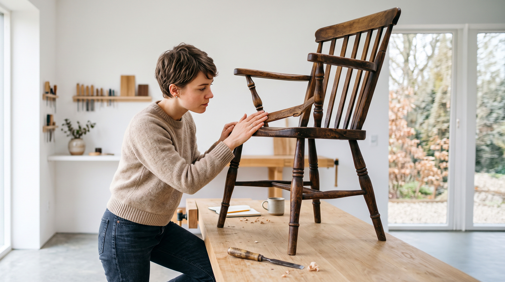

Plan robleRestauración de Muebles Antiguos
Ideal para quienes quieren aprender técnicas específicas para conservar piezas antiguas y respetar su valor original.
- 8 clases online
- Introducción a materiales y herramientas
- Acceso de por vida